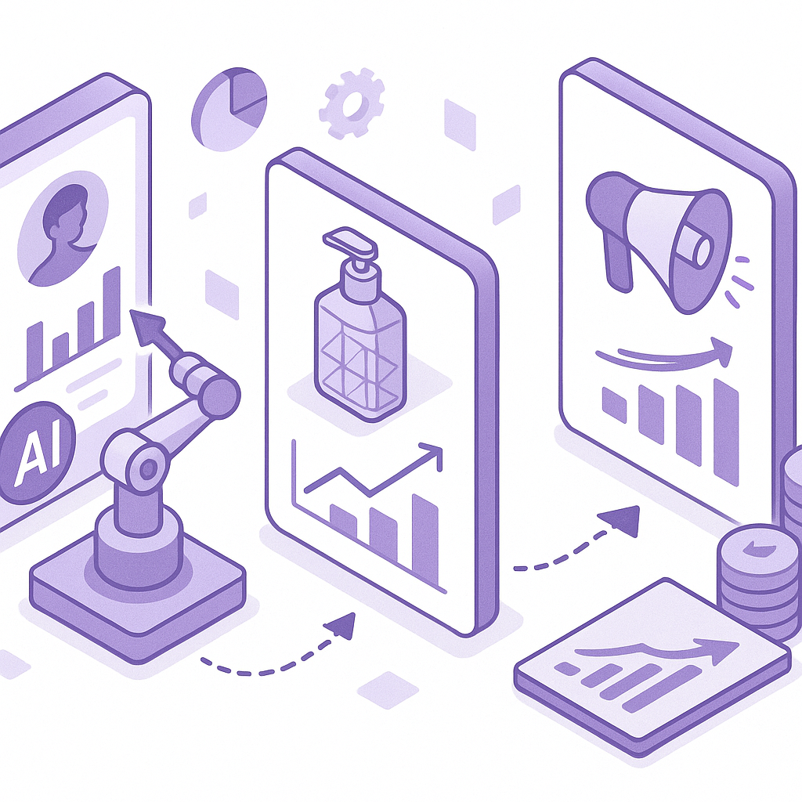
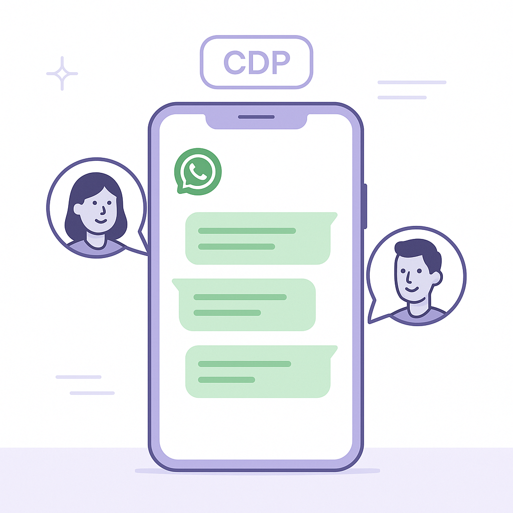

Publishing Recommendation
reviseThe drafts are overly promotional, lacking in critical analysis of the trends, and rely too heavily on company-specific pitches without substantive insight into the broader industry implications.
Today's drafts need refinement. They lean too heavily on promoting Purands AI services rather than delivering practical insights into the trends themselves. While the topics are relevant, the posts should offer more balanced perspectives, focusing on industry implications and cautionary insights. Ensure the content aligns with our brand voice, emphasizing practical utility over promotional language.
LinkedIn Posts (10)
1. Dollar Shave Club uses generative AI to unlock advertising creativity ★ Purands solution · high priority
CTA: How are you using AI to personalize customer interactions?
{kind=link}
Image prompt · flat-vector
Caption: AI enhances creativity in advertising.
Alternative hooks
- What if your ads could think like your customers?
- Generative AI isn't just for headlines - it's reshaping engagement.
- Imagine marketing content that adapts to each customer's story.
Research behind this post (sources, summaries & confidence)
Dollar Shave Club uses generative AI to unlock advertising creativity conf 0.90 · AI in business
The use of generative AI by Dollar Shave Club for advertising creativity highlights the potential of AI to transform marketing content creation, providing new opportunities for engagement and retention.
Sources & what I took from each
- Dollar Shave Club is using generative AI in advertising.: Generative AI is transforming how the company creates marketing content. ↗ read source
Original trend links
Risks / caveats
- Over-reliance on AI for creativity may reduce human input and originality.
2. Salesforce rolls out new Slackbot AI agent ★ Purands solution · high priority
CTA: How does your team currently handle retention challenges? Share your approach.
Alternative hooks
- Salesforce's Slackbot AI is streamlining team chatter, but can it boost your customer retention?
- Marketing ops are getting a boost from Salesforce's new Slackbot AI, but how about taking it to your customers?
- Slackbot AI is changing team dynamics, but what if your AI could also change customer retention?
Research behind this post (sources, summaries & confidence)
Salesforce rolls out new Slackbot AI agent conf 0.80 · Practical AI agents for marketing ops
Salesforce's new Slackbot AI agent can streamline communication and task management within teams, enhancing the efficiency of marketing operations. This is particularly relevant for retention marketing teams that rely on rapid and coordinated responses.
Sources & what I took from each
- Salesforce has launched a Slackbot AI agent.: The new AI agent is designed to enhance team communication and task management. ↗ read source
Original trend links
Risks / caveats
- Potential privacy concerns with AI monitoring workplace communication.
3. L’Oreal, Mondelez, and Nestle use AI to speed product development ★ Purands solution · high priority
CTA: How are you using AI to adapt quickly to consumer trends in your industry?

⬇ Download image{kind=link}
Image prompt · soft-isometric
Caption: AI speeds up product development and retention.
Alternative hooks
- L’Oreal, Mondelez, and Nestle aren't just using AI, they're speeding up product launches.
- What do L’Oreal, Mondelez, and Nestle have in common? AI-driven product acceleration.
- AI is not just a buzzword. For L’Oreal, Mondelez, and Nestle, it's a game-changing tool.
Research behind this post (sources, summaries & confidence)
L’Oreal, Mondelez, and Nestle use AI to speed product development conf 0.80 · AI industry
The use of AI by major brands to accelerate product development illustrates the technology's role in enhancing speed to market. This can be pivotal for retention marketing by allowing quicker adaptation to consumer trends and demands.
Sources & what I took from each
- AI is being used to speed up product development by major brands.: Companies like L’Oreal, Mondelez, and Nestle are employing AI for faster market readiness. ↗ read source
Original trend links
Risks / caveats
- Over-reliance on AI could lead to reduced human oversight in product development.
4. Amazon announces 2026 holiday fulfillment fees ★ Purands solution · high priority
CTA: How are you adjusting your retention strategies in light of these new fees?
Alternative hooks
- Amazon’s holiday fees are set to shake up the e-commerce world.
- New fulfillment fees from Amazon: what this means for your Shopify store.
- Holiday fulfillment costs are rising. Here’s how to keep your customers happy.
Research behind this post (sources, summaries & confidence)
Amazon announces 2026 holiday fulfillment fees conf 0.80 · Shopify ecosystem
Amazon's new holiday fulfillment fees will likely influence e-commerce strategies during peak seasons, affecting how Shopify merchants plan their logistics and pricing strategies to maintain customer satisfaction and retention.
Sources & what I took from each
- Amazon has announced new holiday fulfillment fees.: These fees will influence e-commerce logistics and pricing strategies. ↗ read source
Original trend links
Risks / caveats
- Increased fulfillment costs may be passed on to consumers, affecting sales.
5. WhatsApp commerce with customer data platforms (CDP) ★ Purands solution · high priority
CTA: How is your business leveraging WhatsApp in customer interactions?

⬇ Download image{kind=link}
Image prompt · flat-vector
Caption: WhatsApp and CDP integration for commerce.
Alternative hooks
- In APAC, WhatsApp is more than just a chat app, it's a commerce powerhouse.
- Ever wondered how WhatsApp could transform your customer interactions?
- Why are businesses in APAC leaning on WhatsApp for direct sales?
Research behind this post (sources, summaries & confidence)
WhatsApp commerce with customer data platforms (CDP) conf 0.70 · WhatsApp commerce
WhatsApp commerce continues to be a critical channel in APAC for businesses to engage with customers. Integrating CDPs for personalized and data-driven interactions can significantly enhance customer retention and lifecycle value.
Examples
- Businesses in APAC using WhatsApp for direct customer interactions and sales.
Original trend links
Risks / caveats
- Data privacy concerns with integrating CDPs and messaging platforms.
6. Agentic orchestration in enterprise AI ★ Purands solution · high priority
CTA: How has your business tackled AI deployment challenges?
Alternative hooks
- Deploying AI isn't just a tech problem, it's an operational challenge.
- Think your AI platform is the issue? It's often the deployment that needs work.
- Effective AI isn't just about the platform, but how you deploy it.
Research behind this post (sources, summaries & confidence)
Agentic orchestration in enterprise AI conf 0.70 · AI industry
The discussion on agentic orchestration in enterprise AI highlights the challenges of deploying AI agents in business, focusing on operational deployment rather than just platform capabilities. This is crucial for effectively leveraging AI in retention marketing.
Sources & what I took from each
- Enterprise AI faces deployment challenges.: The challenges are more about operational deployment rather than platform capabilities. ↗ read source
Original trend links
Risks / caveats
- Misalignment between AI capabilities and business needs.
7. Loyalty program design and Shopify ecosystem ★ Purands solution · high priority
CTA: How are you leveraging loyalty programs to enhance customer retention in your Shopify store?
Alternative hooks
- Shopify loyalty apps are more than a fad-they're reshaping customer engagement.
- Loyalty programs on Shopify: a new frontier for customer retention.
- Can loyalty apps on Shopify really boost repeat purchases?
Research behind this post (sources, summaries & confidence)
Loyalty program design and Shopify ecosystem conf 0.60 · Loyalty programs
New developments in Shopify loyalty apps highlight ongoing innovations in loyalty program design, which are crucial for improving customer retention and increasing repeat purchases in the competitive e-commerce landscape.
Examples
- Shopify merchants using loyalty apps to enhance customer engagement.
Original trend links
Risks / caveats
- Loyalty program saturation could lead to decreased consumer interest.
8. Thinking Machines open sources first multimodal language model, Inkling
CTA: What do you think about the impact of open-sourcing AI models like Inkling on enterprise data privacy?
Alternative hooks
- In 2026, AI customization took a leap forward.
- Thinking Machines just changed the AI game with Inkling.
- Open weights in AI - a milestone for enterprises.
Research behind this post (sources, summaries & confidence)
Thinking Machines open sources first multimodal language model, Inkling conf 0.90 · AI industry
The release of Inkling represents a significant shift in AI model accessibility, allowing enterprises to utilize open weights models for agentic AI workloads. This can lead to more customizable and private AI solutions, crucial for retention marketing where data privacy is paramount.
Sources & what I took from each
- Inkling is the first open-sourced multimodal language model.: Thinking Machines has released Inkling, an open weights model allowing enterprises to customize AI solutions. ↗ read source
Original trend links
- https://venturebeat.com/technology/thinking-machines-open-sources-first-multimodal-language-model-inkling-focused-on-low-cost-and-resistance-to-censorship
- https://thinkingmachines.ai/news/introducing-inkling/
Risks / caveats
- Open-sourcing AI models might lead to misuse or ethical concerns.
9. Railway's AI-native cloud infrastructure funding
CTA: How do you see the future of AI-native cloud services shaping up?
Alternative hooks
- Railway just snagged $100 million to take on AWS. Here's why it matters.
- Why is Railway betting $100 million on AI-native cloud infrastructure?
- Specialized clouds for AI: Railway's $100 million gamble.
Research behind this post (sources, summaries & confidence)
Railway secures $100 million to challenge AWS with AI-native cloud infrastructure conf 0.80 · AI startups
Railway's funding to build AI-native cloud infrastructure highlights the growing trend of specialized cloud services that cater specifically to AI applications, which are critical for the scalability and efficiency of retention marketing technologies.
Sources & what I took from each
- Railway has secured $100 million in funding.: The funding is aimed at developing AI-native cloud infrastructure. ↗ read source
Original trend links
Risks / caveats
- Competition from established players like AWS and Google Cloud.
10. AWS and Bluesight build AI for hospital 340B compliance
CTA: Have you seen AI improve regulatory processes in your industry?
Alternative hooks
- Compliance in hospitals can be a labyrinth, especially with programs like 340B.
- AI can sift through vast amounts of data to identify discrepancies or compliance issues.
- AWS and Bluesight are stepping in with AI to tackle hospital compliance.
Research behind this post (sources, summaries & confidence)
AWS and Bluesight build AI for hospital 340B compliance conf 0.80 · AI in business
This development showcases the application of AI in compliance, which is vital for industries with stringent regulatory requirements. It demonstrates AI's potential in optimizing operational processes, a concept that can be extended to retention marketing compliance.
Sources & what I took from each
- AWS and Bluesight are developing AI for hospital compliance.: This initiative targets 340B compliance, showcasing AI's role in regulatory processes. ↗ read source
Original trend links
Risks / caveats
- Dependence on AI solutions for critical compliance tasks may raise concerns.
Today's Trends
| # | Trend | Category | Why it matters |
|---|---|---|---|
| 1 | Thinking Machines open sources first multimodal language model, Inkling
source source |
AI industry | The release of Inkling represents a significant shift in AI model accessibility, allowing enterprises to utilize open weights models for agentic AI workloads. This can lead to more customizable and private AI solutions, crucial for retention marketing where data privacy is paramount. |
| 2 | Salesforce rolls out new Slackbot AI agent
source |
Practical AI agents for marketing ops | Salesforce's new Slackbot AI agent can streamline communication and task management within teams, enhancing the efficiency of marketing operations. This is particularly relevant for retention marketing teams that rely on rapid and coordinated responses. |
| 3 | WhatsApp commerce with customer data platforms (CDP)
source source |
WhatsApp commerce | WhatsApp commerce continues to be a critical channel in APAC for businesses to engage with customers. Integrating CDPs for personalized and data-driven interactions can significantly enhance customer retention and lifecycle value. |
| 4 | Stripe and Advent offer to acquire PayPal
source |
AI startups | The potential acquisition of PayPal by Stripe and Advent could reshape the fintech landscape, affecting how digital payments are integrated into retention marketing strategies, especially with AI-driven personalization. |
| 5 | Railway secures $100 million to challenge AWS with AI-native cloud infrastructure
source |
AI startups | Railway's funding to build AI-native cloud infrastructure highlights the growing trend of specialized cloud services that cater specifically to AI applications, which are critical for the scalability and efficiency of retention marketing technologies. |
| 6 | Agentic orchestration in enterprise AI
source |
AI industry | The discussion on agentic orchestration in enterprise AI highlights the challenges of deploying AI agents in business, focusing on operational deployment rather than just platform capabilities. This is crucial for effectively leveraging AI in retention marketing. |
| 7 | AWS and Bluesight build AI for hospital 340B compliance
source |
AI in business | This development showcases the application of AI in compliance, which is vital for industries with stringent regulatory requirements. It demonstrates AI's potential in optimizing operational processes, a concept that can be extended to retention marketing compliance. |
| 8 | L’Oreal, Mondelez, and Nestle use AI to speed product development
source |
AI industry | The use of AI by major brands to accelerate product development illustrates the technology's role in enhancing speed to market. This can be pivotal for retention marketing by allowing quicker adaptation to consumer trends and demands. |
| 9 | Loyalty program design and Shopify ecosystem
source source |
Loyalty programs | New developments in Shopify loyalty apps highlight ongoing innovations in loyalty program design, which are crucial for improving customer retention and increasing repeat purchases in the competitive e-commerce landscape. |
| 10 | 1Password moves into AI cost management
source |
AI in business | 1Password’s entry into AI cost management addresses the growing concern of managing AI-related expenses, which is increasingly relevant for businesses leveraging AI for retention marketing. |
| 11 | Cadence unveils AuraStack AI Super Agent
source |
AI industry | The introduction of Cadence’s AI Super Agent for PCB and advanced chip packaging design demonstrates the expanding role of AI in specialized industrial applications, indicating potential cross-industry applications including marketing tech. |
| 12 | Apple bans home services from its upcoming Maps ads
source |
CRM strategy | Apple’s decision to ban certain ads from its Maps platform impacts how businesses can target and engage customers through CRM strategies, affecting local and service-based businesses significantly. |
| 13 | Amazon announces 2026 holiday fulfillment fees
source |
Shopify ecosystem | Amazon's new holiday fulfillment fees will likely influence e-commerce strategies during peak seasons, affecting how Shopify merchants plan their logistics and pricing strategies to maintain customer satisfaction and retention. |
| 14 | Dollar Shave Club uses generative AI to unlock advertising creativity
source |
AI in business | The use of generative AI by Dollar Shave Club for advertising creativity highlights the potential of AI to transform marketing content creation, providing new opportunities for engagement and retention. |
Risk Assessment
- Potential brand risk from overly promotional tone, diverging from the practical and insightful brand voice.
- Factual risk in equating AI capabilities with outcomes without sufficient evidence.
- Tone risk as some posts may sound AI-generated due to repetitive structure and lack of depth.
Suggested LinkedIn Comments (30)
Open each post, then paste the copied comment. Nothing is posted automatically.
1. insight · Emily Mitchell — Our IT team is growing! Calling all my machine learning data engineers! Apply no
Post by: Emily Mitchell
Why it works: This comment highlights the strategic importance of hiring data engineers, adding value by articulating their role in scaling tech operations.
↗ Open LinkedIn post to paste comment2. insight · Heather McBrinn — We're hiring a Machine Learning Scientist Generate:Biomedicines. If you're exci
Post by: Heather McBrinn
Why it works: The comment provides specific insight into why probabilistic methods are valuable in biotech, enhancing the post's message with practical reasoning.
↗ Open LinkedIn post to paste comment3. insight · Diana Cai — I’m joining Cornell University as an Assistant Professor in Computer Science thi
Post by: Diana Cai
Why it works: By congratulating and providing insight into the potential of probabilistic ML, the comment adds a positive and informative layer to Diana's announcement.
↗ Open LinkedIn post to paste comment4. insight · Paul Crinigan — If you're starting machine learning, name the problem type before you pick an al
Post by: Paul Crinigan
Why it works: This comment reinforces the post's advice with a practical reason, aiding beginners in understanding the importance of structured problem-solving in ML.
↗ Open LinkedIn post to paste comment5. insight · Malay Ghose Hajra, PhD, PE, BC. GE, ENV SP, F. ASCE — Engineering and Tech companies often deal with storing terabytes of project data
Post by: Malay Ghose Hajra, PhD, PE, BC. GE, ENV SP, F. ASCE
Why it works: The comment adds depth by explaining why disorganized data undermines AI efforts, emphasizing the importance of data management.
↗ Open LinkedIn post to paste comment6. insight · Dr. Swapnil Sahoo — Day 4 introduces Machine Learning. This issue explains how machines learn patte
Post by: Dr. Swapnil Sahoo
Why it works: This comment provides a clear and concise explanation of why generalization matters, reinforcing the educational focus of the post.
↗ Open LinkedIn post to paste comment7. opinion · The Acquisition Group — As technology continues to evolve, technical knowledge is only part of the equat
Post by: The Acquisition Group
Why it works: The comment offers a definitive opinion on the value of soft skills, tying into the post's theme of a balanced skill set.
↗ Open LinkedIn post to paste comment8. insight · Sophie C. — Specialized Large Language Models Are Driving the Next Wave of Enterprise AI Inn
Post by: Sophie C.
Why it works: The comment adds value by explaining how specialized LLMs enhance enterprise AI, supporting the post's focus on innovation.
↗ Open LinkedIn post to paste comment9. opinion · Aaron Leckinger — We're just over halfway through the year, and there have already been more than
Post by: Aaron Leckinger
Why it works: By connecting the layoffs to broader career strategies, this comment provides a personal take that resonates with industry professionals.
↗ Open LinkedIn post to paste comment10. insight · MCG Technologies — In tech, expertise matters. But the ability to communicate, collaborate, and ada
Post by: MCG Technologies
Why it works: The comment emphasizes the role of soft skills in tech, aligning with the post's focus on professional development in a specific region.
↗ Open LinkedIn post to paste comment11. insight · Tech Science Press — 📢 Cover Story 📢 📖 When Federated Learning Meets Large Language Models: Taxonom
Post by: Tech Science Press
Why it works: Focuses on the practical implications of the technology, appealing to concerns about data privacy.
↗ Open LinkedIn post to paste comment12. opinion · Eric Okoromi — Tech and fix Sometimes, letting people know what you do isn’t outrightly a bad
Post by: Eric Okoromi
Why it works: Highlights the importance of transparency and communication in building trust and credibility.
↗ Open LinkedIn post to paste comment13. insight · Jess Haberman — AI has made machine learning fundamentals more relevant, not less. Thomas Nield
Post by: Jess Haberman
Why it works: Reinforces the importance of foundational knowledge in understanding and utilizing advanced technologies.
↗ Open LinkedIn post to paste comment14. respectful challenge · Chad Smeltzer — Large Language Models are disrupting every industry,not simply by automating ind
Post by: Chad Smeltzer
Why it works: Balances optimism about LLM capabilities with a reminder of the irreplaceable human aspects of engineering.
↗ Open LinkedIn post to paste comment15. expansion · Ahmed Mongy — Artificial Intelligence is fundamentally changing the manner in which people wor
Post by: Ahmed Mongy
Why it works: Broadens the discussion by emphasizing the role of integration in realizing AI's full potential.
↗ Open LinkedIn post to paste comment16. insight · Taggart Boyle — LLM tools are transforming how companies research, write, code, analyze informat
Post by: Taggart Boyle
Why it works: Emphasizes the importance of demystifying technology to enhance its application in business contexts.
↗ Open LinkedIn post to paste comment17. insight · Zacharias S. — I just spent an hour talking about business. Not once did we talk about IT. No
Post by: Zacharias S.
Why it works: Reinforces the post's core message about the supportive role of technology in achieving business objectives.
↗ Open LinkedIn post to paste comment18. expansion · Waseem Khan — Today I published my first book: Large Language Models from the Ground Up. Here
Post by: Waseem Khan
Why it works: Appreciates the effort to make complex technology accessible, which is crucial for widespread adoption.
↗ Open LinkedIn post to paste comment19. insight · Steven Umbrello — Large Language Models (LLMs) are a paradox: impressive yet potentially dangerous
Post by: Steven Umbrello
Why it works: Acknowledges both the capabilities and the limitations of LLMs, which is important for informed usage.
↗ Open LinkedIn post to paste comment20. insight · Vamshi Krishna — Machine Learning or Deep Learning #telugu #ml #ai #students #itjobs #skills #te
Post by: Vamshi Krishna
Why it works: Provides practical guidance based on the user's goals, helping to clarify the decision-making process.
↗ Open LinkedIn post to paste comment21. insight · Justin Lester M.A, D.Min — The top AI tools people are using around the world right now. ChatGPT, Google G
Post by: Justin Lester M.A, D.Min
Why it works: The comment shifts the focus from understanding to application, giving readers a practical takeaway.
↗ Open LinkedIn post to paste comment22. expansion · Giovanni Santiago — With all the changes happening in the tech industry, (especially in game develop
Post by: Giovanni Santiago
Why it works: The comment extends the discussion by suggesting adaptation as a complementary strategy, which adds depth to the original point.
↗ Open LinkedIn post to paste comment23. opinion · Joe Procopio — The “New Hiring Normal” in the Tech Industry is About to Become a Crisis – Tec
Post by: Joe Procopio
Why it works: It offers a clear stance on the importance of agility in hiring processes, reinforcing the post's theme with a practical implication.
↗ Open LinkedIn post to paste comment24. opinion · Kirk Mettler — Should Large Language Models be regulated — or left alone to innovate? It's the
Post by: Kirk Mettler
Why it works: The comment presents a balanced view, supporting the need for regulation while acknowledging the importance of innovation.
↗ Open LinkedIn post to paste comment25. insight · Robert Tarkenton — I’m excited to finally share something I’ve been working on for a while: LLMs fr
Post by: Robert Tarkenton
Why it works: It reinforces the importance of foundational knowledge, adding value to the post's promotion of the course.
↗ Open LinkedIn post to paste comment26. insight · Steven Umbrello — Large Language Models (LLMs) are not sentient beings; they are sophisticated sta
Post by: Steven Umbrello
Why it works: It clarifies a common misconception about AI, enhancing understanding and aligning with the post's educational focus.
↗ Open LinkedIn post to paste comment27. insight · DANIEL AYELE — Being a technician is a profession built on knowledge, teamwork, and integrity.
Post by: DANIEL AYELE
Why it works: It highlights the broader impact of technical professions, aligning with the post's emphasis on integrity and teamwork.
↗ Open LinkedIn post to paste comment28. expansion · Ivica N. — Industries around the world are entering a new era of intelligent transformation
Post by: Ivica N.
Why it works: The comment expands the discussion by emphasizing the human and cultural aspects necessary for successful transformation.
↗ Open LinkedIn post to paste comment29. insight · Aqeel Anwar — 🚀 𝗪𝗲'𝗿𝗲 𝗛𝗶𝗿𝗶𝗻𝗴: 𝗠𝗮𝗰𝗵𝗶𝗻𝗲 𝗟𝗲𝗮𝗿𝗻𝗶𝗻𝗴 𝗥𝗲𝘀𝗲𝗮𝗿𝗰𝗵 𝗜𝗻𝘁𝗲𝗿𝗻 𝗮𝘁 𝗡𝗩𝗜𝗗𝗜𝗔 - 𝗙𝗮𝗹𝗹 𝟮𝟬𝟮𝟲 We're loo
Post by: Aqeel Anwar
Why it works: It underscores the value of practical experience in a leading-edge field, appealing to potential candidates' interests.
↗ Open LinkedIn post to paste comment30. respectful challenge · Pete A Turner — The concerning potential of Large Language Models (LLMs) lies not just in their
Post by: Pete A Turner
Why it works: It challenges the post by suggesting a dual responsibility model, providing a nuanced take on accountability.
↗ Open LinkedIn post to paste comment